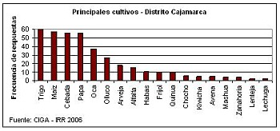

Distrito de Cajamarca
Los cultivos más importantes del distrito están conformados por: el trigo, el maíz (Zea mays), la cebada (Horedum vulgare) y la papa (Solanum tuberosum). Sin embargo, en el gráfico se pueden observar todos los cultivos que la población afirma producir. Según la información dada por los habitantes, el trigo tiene una superficie promedio de cultivo de 2 ha y es en Chilimpampa Baja donde la extensión del cultivo es mayor: 10 hectáreas. La producción es destinada al autoconsumo; sin embargo, el excedente llega a ser vendido en algunas ocasiones a S/. 4. El maíz, se cultiva principalmente al sur del distrito, en Agocucho, lugar en que se alcanzan las 20 hectáreas. La producción se destina a la venta que se realiza en los mercados locales o en la ciudad de Cajamarca, como es el caso del maíz producido en La Victoria. Principales cultivosLa cebada se cultiva principalmente a partir de los 3400 m.s.n.m. De esta manera, en Porconcillo Alto, el cultivo alcanza una extensión de 20 hectáreas, que es la más alta en todo el distrito. Finalmente, la producción de papa es destinada al consumo a excepción de la que se obtiene en Pariamarca y Cashaloma, donde sus habitantes afirmaron comercializarla en los mercados locales. En el resto de caseríos, con una extensión promedio de 1.5 hectáreas, el destino de la producción es el autoconsumo.
En Cajamarca
El distrito de Jaén es el que posee las mayores tierras para la actividad agrícola con 30,415 has. El distrito de Huabal es el más representativo en el uso de la tierra para la actividad agrícola, con una superficie total de 8,431 ha y que en un 70% es aprovechada por la actividad agrícola. En general, la actividad agrícola esta basada en la producción de café y arroz y en menor escala, los cultivos de maíz amarillo, maíz amiláceo, frijol, arveja, yuca y frutales; la diversidad de productos son consecuencia de los variados climas que se presentan en todo el territorio de la provincia. El cultivo del cacao, comparado con el café y el arroz, no representa un rubro importante en la producción y área cultivada; sin embargo, puede constituirse en un cultivo importante en un mediano plazo. En San Ignacio, por el contrario, las principales actividades agrícolas son el café y el cacao, que se constituyen en la principal alternativa de desarrollo en el corto plazo, mientras que las actividades de turismo y silvicultura (manejo de bosques), se convierten en importantes actividades para el largo plazo.
En el sisguiente cuadro se muestran algunos de los programas ya ejecutados, y que ahora son agencias agrarias, gracias al gobierno regional de cajamarca que esta apoyando continuamente a los agricultores, ademas de esos proyectos tambien tenemos inicitivas propias de cada agricultor, que busca la manera de mejorar sus sembrios, que no solo son para su alimentacion sino para vender dentro y fuera del pais.
| Descripcion | Cantidad |
|---|---|
| Atención directa a productores agropecuarios de la provincia de Cajamarca | 1480 productores |
| Conformación de tres comités de base para su integración en la Cooperativa del Alto Jequetepeque | 02 en San Juan 01 en Chetilla |
| Reflotamiento del vivero forestal de Tartar, para la producción de plantones | 70 000 plantones |
| Producción de plantones en el vivero de Namora | 150 000 plantones |
Uno de los principales objetivos de la actual gestión, es la de garantizar la tenencia legal de propiedades, de nuestros hermanos campesinos de la Región Cajamarca; por ello, existe el compromiso y la decisión de las autoridades del Gobierno Regional de Cajamarca (en especial del sector de Agricultura), en sanear el 100% las propiedades de los campesinos de la región; para lograr esta meta se viene trabajando en la identificación de propiedades informales, por lo que en el transcurso de este año se han venido desarrollando actividades de entrega de títulos de propiedad; haciendo un total de 3 120 títulos entregados en diversas provincias de la Región Cajamarca.